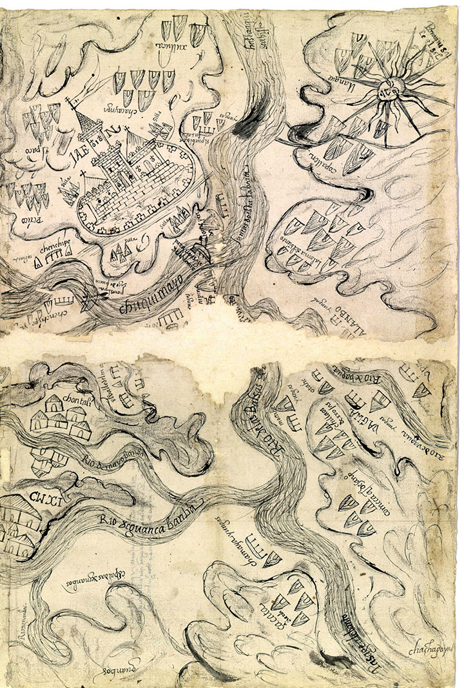

Tool of Statecraftas far back as Rome
|
 |
Estate maplate 13th or 14th C onwards
|
Palomino, Diego (1549). Traça de la conquista del capitán Diego Palomino: [de las Relaciónes Geográficas, Provincia de Chuquimayo, Perú]
Kain, R. J. P., & Baigent, E. (1992). The Cadastral Map in the Service of the State: A History of Property Mapping. Chicago: University of Chicago Press.
Timothy Norris
tnorris@miami.edu
09/26/2019
You can follow along at:
https://tinyurl.com/pmapla
https://tibbben.github.io/participatory-mapping/
United Nations, Department of Economic and Social Affairs, Population Division (2014). World Urbanization Prospects: The 2014 Revision.
"It is an odd concept to attribute to a piece of software the potential to enhance or limit public participation in policymaking, empower or marginalize community members to improve their lives, counter or enable agendas of the powerful, and advance or diminish democratic principles. However, that is exactly what has happened with geographic information systems (GIS) ..." (Sieber 2006: 491)
Sieber, R. (2006). Public Participation Geographic Information Systems: A Literature Review and Framework. Annals of the Association of American Geographers, 96(3), 491-507. doi:10.1111/j.1467-8306.2006.00702.x
Indigenous Data Governance
Really listening to other ways of knowing entails more than just databasing. After all, indigenous knowledge tends to end up in text fields in scientific databases: collocated with the real data but unmanipulable and hence unusable. How should we record and remember other ways of knowing?” (pp. 218-219)
Bowker, Geoffrey C. (2005). Memory Practices in the Sciences. Cambridge, Massachusetts: The MIT Press. pp 218-219.
FODA - Octubre 2018
Nuestro objetivo es proporcionar acceso a esta información a través de una interfaz basada en web donde tanto personas de la comunidad y agencias gubernamentales locales como municipios puede usar la herramienta para guiar las iniciativas de desarrollo basadas en la visión de la comunidad.
Este proyecto pretende brindarle herramientas de superación e organización a la comunidad y sus organizaciones sociales del Barrio Las Flores de la Ciudad de Barranquilla Colombia, en temas de acordes con el desarrollo sostenible tales como, lo económico, lo ambiental y social. De este manera hace que fluya mas transparente la información entre la comunidad, la municipalidad distrital de Barranquilla, y el sector privado de la ciudad. El objetivo principal es dar una voz mas alta de la comunidad en su propio desarrollo y fomentar la democracia participativa.
Interdisciplinary Crossover
After rights, then what?